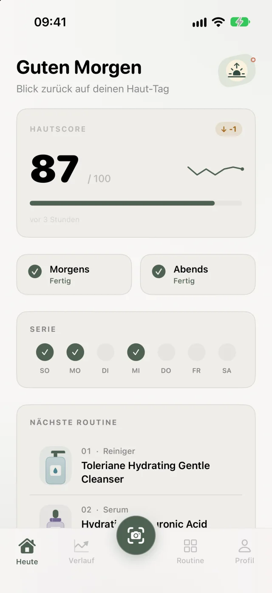

Serie und Meilensteine
Jeder Tag mit Scan zählt für deine Serie. Verpasst du einen, springt automatisch ein Freeze ein. Meilensteine gibt es nach 7, 14 und 28 Tagen und darüber hinaus.
Ein Foto am Tag reicht. Skinmetrics bewertet deine Haut von 0 bis 100 und zeigt dir über Wochen, wie sie sich entwickelt.
Verfügbar auf iOS, bald auf Android

Im Spiegel sieht deine Haut jeden Morgen etwas anders aus. Licht, Schlaf und Laune reden mit, und ob es seit letztem Monat besser geworden ist, weiß am Ende niemand genau. Skinmetrics misst jeden Tag auf dieselbe Weise.
Die Kamera führt dich live ins Oval. Abstand, Winkel und Licht prüft das iPhone selbst, bevor du auslöst.
Die Analyse bewertet Klarheit, Textur, Feuchte, Rötung und Ebenheit jeweils von 1 bis 10 und vergibt einen Gesamtwert von 0 bis 100. Daneben steht, wie viel sich seit dem letzten Scan getan hat.
Morgens und abends hakst du ab, was du benutzt hast. Die App prüft dabei, ob sich Wirkstoffe in deiner Routine in die Quere kommen.
Aus einzelnen Werten wird eine Kurve. Nach etwa zwei Wochen mit regelmäßigen Scans steht deine Ausgangslage, und ab dann vergleicht die App ganze Wochen miteinander.
Hinter dem Hautscore stehen fünf Einzelwerte. Tipp einen an, um zu sehen, worauf die Analyse achtet.
Klarheit. Wie ruhig und klar deine Haut auf dem Foto wirkt. Unreinheiten und Flecken ziehen diesen Wert nach unten.
Beispielwerte. Die Analyse beschreibt, was auf dem Foto zu sehen ist, und stellt keine Diagnose.
Haut schwankt von Tag zu Tag. Deshalb zählt Skinmetrics bei jedem Scan die entzündeten Unreinheiten und vergleicht ganze Wochen statt einzelner Tage. Der schattierte Bereich zeigt deine typische Spanne.
Im Vergleich richtet die App beide Fotos an Augen und Nase aus. So fallen Haltung und Abstand kaum ins Gewicht.
Illustration mit KI erzeugt, kein echtes Ergebnis. Zieh am Regler, um beide Seiten zu vergleichen.
Jeder Tag mit Scan zählt für deine Serie. Verpasst du einen, springt automatisch ein Freeze ein. Meilensteine gibt es nach 7, 14 und 28 Tagen und darüber hinaus.
Haut erneuert sich ungefähr alle vier Wochen. Wenn du einen Zyklus lang dabei warst, sagt dir die App das.
Beim Einrichten fotografierst du deine Produkte. Die App erkennt sie und legt daraus deine Routine an.
Retinol und ein Peeling mit Säure am selben Abend? Die App weist dich auf solche Konflikte hin, auch wenn später ein Produkt dazukommt.
Für jedes Produkt stellst du eine eigene Uhrzeit ein.
Hautscore und Serie auf dem Homescreen. Die Widgets zeigen nie ein Bild von dir.
Fotos, Verlauf und Routine speichert die App auf dem Gerät. Für eine Analyse geht eine verkleinerte Kopie des Fotos verschlüsselt an Gemini, die KI von Google, zusammen mit Angaben aus deinem Hautprofil. Ein Konto brauchst du nicht, Werbung gibt es keine, und in den Einstellungen löschst du nach einer Bestätigung alle Daten.
Skinmetrics gibt es im Abo, jährlich oder vierteljährlich. Das Jahresabo kannst du eine Woche lang kostenlos testen.
Mit einer Woche Test, danach einmal im Jahr bezahlt.
Alle drei Monate bezahlt, ohne Testwoche.
Den Preis in deiner Währung zeigt dir der App Store, bevor du etwas abschließt. Kündigen kannst du jederzeit in den Einstellungen deines iPhones.
Skinmetrics gibt es für iPhone im App Store. Die App für Android kommt bald.
Skinmetrics ist kein Medizinprodukt und ersetzt keine ärztliche Beratung, Diagnose oder Behandlung.